MyBatis教程
1. MyBatis 简介
在图形化客户端工具中，编写增删改查的 SQL 语句，发给数据库管理系统，由数据库管理系统执行 SQL 语句并返回执行结果。（增删改操作：返回受影响行数。查询操作：返回结果集）
后端开发人员通常需要使用 Java 程序操作数据库，现在主流的方式是：Mybatis。
- MyBatis 是一款优秀的持久层框架，用于简化 JDBC
的开发。
- 持久层：数据访问层(Dao)，用来操作数据库。
- 框架：是一个半成品软件，是一套可重用的、通用的、软件基础代码模型。
- MyBatis 本是 Apache 的一个开源项目 iBatis，2010年这个项目由 Apache 迁移到了 google code，并且改名为 MyBatis 。2013年11月迁移到 Github。
- 官网：MyBatis中文网
2. MyBatis 快速开始
2.1 开始程序
- 创建工程，添加依赖
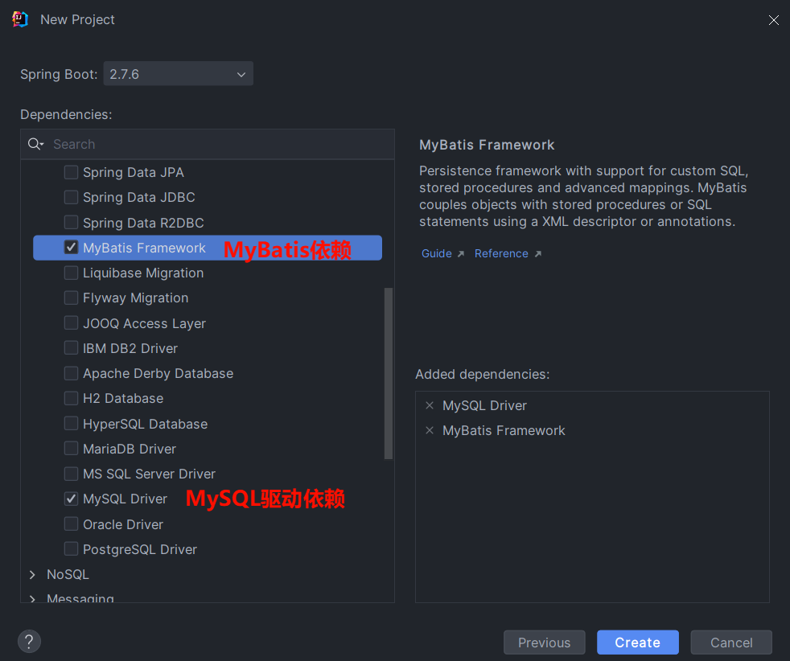
准备数据，创建表并创建对应的实体类。实体类的属性名与表中的字段名一一对应。
配置 MyBatis
图形化界面连接数据库需要以下信息，称为数据库连接四要素：
- 驱动
- 用户名
- 密码
- 数据库连接字符串

MyBatis 的配置同样需要这些信息，在 SpringBoot 项目中，可以编写
application.properties 文件，配置数据库连接信息。
1 | |
- 编写 SQL 语句（注解/XML）
在 SpringBoot 项目中，在启动类所在包下，创建一个包 mapper，在 mapper 包下创建一个接口 XxxMapper，这是一个持久层接口（Mybatis 的持久层接口规范一般都叫 XxxMapper，和 Dao 层一样）。
1 | |
@Mapper 注解：表示是 Mybatis 中的 Mapper 接口(代替
SpringBoot 中的 @Repository)
程序运行时会自动生成接口的实现类对象(代理对象)，并给交 Spring 的 IOC
容器管理
@Select 注解：代表的就是 select 查询，用于书写 SQL
语句，还有
@Insert，@Delete，@Update
- 单元测试
在 SpringBoot 项目中，src 下的 test
目录下，已经自动帮我们创建好了测试类 ，并且在测试类上已经添加了注解
@SpringBootTest，代表该测试类已经与 SpringBoot 整合。
该测试类在运行时，会自动通过启动类加载 Spring
的环境（IOC容器）。我们测试 bean 对象，可以通过 @Autowired
直接将其注入。
1 | |
2.2 SQL 提示和警告
如果 SQL 语句没有提示，可以按照下图设置：

如果表名不识别，IDEA 配置时选择数据库：
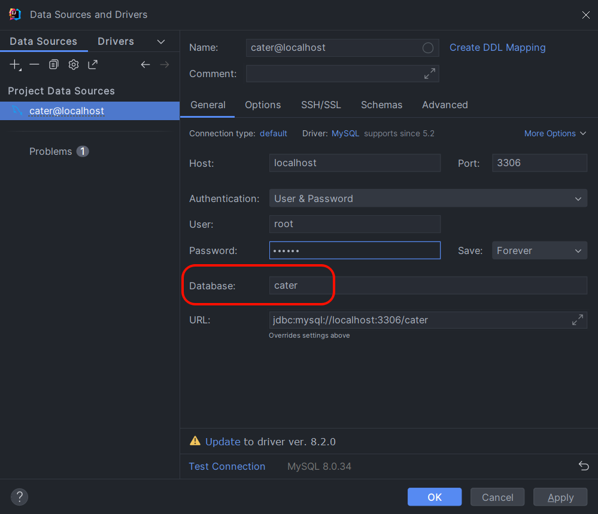
3. JDBC
3.1 JDBC 简介
JDBC： ( Java DataBase Connectivity )，使用 Java 语言操作关系型数据库的一套 API。 Java 语言操作数据库只能通过一种方式：使用 sun 公司提供的 JDBC 规范。
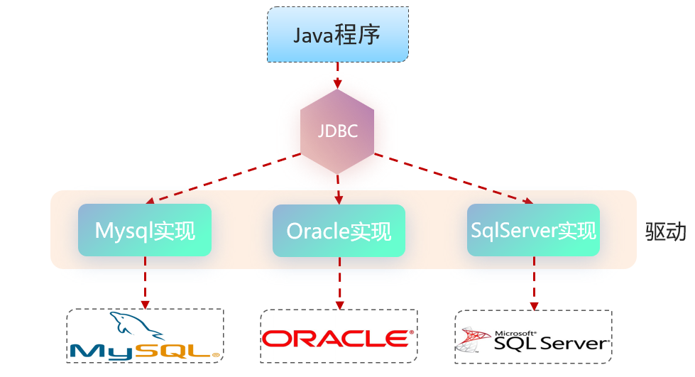
- sun 公司官方定义的一套操作所有关系型数据库的规范，即接口。
- 各个数据库厂商去实现这套接口，提供数据库驱动 jar 包。（数据库驱动就是各个厂商的实现）
- 我们可以使用这套接口(JDBC)编程，真正执行的代码是驱动 jar 包中的实现类。
3.2 JDBC 实现
JDBC 代码：
1 | |
DriverManager(类)：数据库驱动管理类。- 注册驱动
- 创建 Java 代码和数据库之间的连接，即获取
Connection对象
Connection(接口)：建立数据库连接的对象 作用：用于建立 Java 程序和数据库之间的连接Statement(接口)： 数据库操作对象(执行 SQL 语句的对象)。 作用：用于向数据库发送 SQL 语句ResultSet(接口)：结果集对象（一张虚拟表） 作用：SQL 查询语句的执行结果会封装在ResultSet中
3.3 JDBC 与 MyBatis
JDBC 缺点：
- 数据库连接的四要素(驱动、链接、用户名、密码)全部硬编码在 Java 代码中。
- 查询结果的解析及封装非常繁琐。
- 每一次查询数据库都需要获取连接,操作完毕后释放连接, 资源浪费, 性能降低。
Mybatis 框架，就是对原始 JDBC 程序的封装。在 MyBatis 中通过以下方案解决 JDBC 的问题。
- 数据库连接四要素(驱动、链接、用户名、密码)，都配置在 SpringBoot
默认的配置文件
application.properties中。 - 查询结果的解析及封装，由 MyBatis 自动完成映射封装，我们无需关注。
- 在 MyBatis 中使用了数据库连接池技术，避免了频繁的创建连接、销毁连接而带来的资源浪费。
4. 数据库连接池
4.1 介绍
没有使用数据库连接池时，客户端执行 SQL 语句：要先创建一个新的连接对象，然后执行 SQL 语句，SQL 语句执行后又需要关闭连接对象从而释放资源。每次执行 SQL 都需要创建连接、销毁链接，这种频繁的重复创建销毁的过程比较耗费计算机性能。

数据库连接池是个容器，负责分配、管理数据库连接(Connection)。 程序在启动时，会在数据库连接池(容器)中，创建一定数量的 Connection 对象。
允许应用程序重复使用一个现有的数据库连接，而不是再重新建立一个。 客户端执行 SQL 时，先从连接池中获取一个 Connection 对象，再执行 SQL 语句，执行完毕把 Connection 对象归还给连接池。（Connection 对象可以复用）
释放空闲时间超过最大空闲时间的连接，来避免因为没有释放连接而引起的数据库连接遗漏。 客户端获取到 Connection 对象，但是 Connection 对象并没有访问数据库(处于空闲)，数据库连接池发现 Connection 对象的空闲时间 > 连接池中预设的最大空闲时间，此时数据库连接池就会自动释放掉这个连接对象。
数据库连接池的好处：
- 资源重用
- 提升系统响应速度
- 避免数据库连接遗漏
4.2 产品
官方(sun)提供了数据库连接池标准（javax.sql.DataSource接口）
功能：获取连接 1
public Connection getConnection() throws SQLException;
第三方组织必须按照 DataSource 接口实现，常见的数据库连接池：
- C3P0
- DBCP
- Druid
- Hikari (SpringBoot 默认)
现在使用更多的是：Hikari、Druid （性能更优越）
- Hikari（追光者） （默认的连接池）
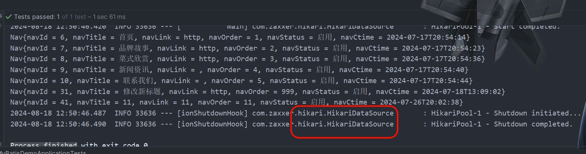
- Druid（德鲁伊）
- Druid 连接池是阿里巴巴开源的数据库连接池项目
- 功能强大，性能优秀，是 Java 语言最好的数据库连接池之一
如果想把默认的数据库连接池切换为 Druid 数据库连接池，只需要完成以下两步操作即可：
参考官方地址：druid/druid-spring-boot-starter at master · alibaba/druid · GitHub
- 在
pom.xml文件中引入依赖
1 | |
- 在
application.properties中引入数据库连接配置
1 | |
5. Lombok
5.1 Lombok 介绍
Lombok 是一个实用的 Java 类库，可以通过简单的注解来简化和消除一些必须有但显得很臃肿的 Java 代码。通过注解的形式自动生成构造器、getter/setter、equals、hashcode、toString 等方法，并可以自动化生成日志变量，简化 Java 开发、提高效率。
| 注解 | 作用 |
|---|---|
| @Getter/@Setter | 为所有的属性提供get/set方法 |
| @ToString | 会给类自动生成易阅读的 toString 方法 |
| @EqualsAndHashCode | 根据类所拥有的非静态字段自动重写 equals 方法和 hashCode 方法 |
| @Data | 提供了更综合的生成代码功能（@Getter + @Setter + @ToString + @EqualsAndHashCode） |
| @NoArgsConstructor | 为实体类生成无参的构造器方法 |
| @AllArgsConstructor | 为实体类生成除了static修饰的字段之外带有各参数的构造器方法。 |
Lombok 会在编译时，自动生成对应的 Java 代码。使用 Lombok 时，还需要安装一个 Lombok 的插件(IDEA 自带)。
5.2 Lombok 使用
第1步：在 pom.xml 文件中引入依赖
1 | |
第2步：在实体类上添加注解
1 | |
@Data 注解中不包含全参构造方法，通常在实体类上，还会添加上：全参构造、无参构造。
6. 数据封装
- 实体类属性名和数据库表查询返回的字段名一致，MyBatis 会自动封装。
- 实体类属性名和数据库表查询返回的字段名不一致，不能自动封装。

解决方案：
- 起别名
在 SQL 语句中，对不一样的列名起别名，别名和实体类属性名一样
1 | |
- 手动结果映射
通过 @Results 及 @Result
进行手动结果映射
1 | |
- 使用
@Param注解
使用 @Param
注解，可以为参数明确地指定一个名称，这个名称将与 SQL
中的占位符对应。
1 | |
- 开启驼峰命名(推荐)：
如果字段名与属性名符合驼峰命名规则，MyBatis 会自动通过驼峰命名规则映射。
驼峰命名规则： abc_xyz => abcXyz
- 表中字段名：abc_xyz
- 类中属性名：abcXyz
1 | |
实体类的属性与数据库表中的字段名必须严格遵守驼峰命名。
7. 基础操作
7.1 删除
1 | |
如果 mapper 接口方法形参只有一个普通类型的参数，
#{…}里面的属性名可以随便写，如：#{id}、#{value}。但形参名和属性名最好还是保持一致。
7.2 MyBatis 日志
在 application.properties
文件中开启mybatis的日志，并指定输出到控制台
1 | |
开启日志之后，再次运行单元测试，可以看到在控制台中，输出了以下的 SQL 语句信息：

输入的参数42并没有在后面拼接，nav_id 的值是使用 ?
进行占位。这种 SQL 语句称为预编译 SQL。
7.3 预编译 SQL
预编译 SQL 有两个优势：
性能更高 预编译 SQL，编译一次之后会将编译后的 SQL 语句缓存起来，后面再次执行这条语句时，不会再次编译。（只是输入的参数不同）
更安全(防止SQL注入) 将敏感字进行转义，保障 SQL 的安全性。

SQL 注入：通过操作输入的数据来修改事先定义好的 SQL 语句，达到执行代码对服务器进行攻击的方法。举个简单例子：
1 | |
上述 SQL中，若用户密码输入
' or '1' = '1，账号随便输入都可以登陆成功，拼接之后的 SQL
句义已经改变：
1 | |
由于没有对用户输入进行充分检查，SQL 又是拼接而成，在用户输入参数时，在参数中添加一些 SQL 关键字，达到改变 SQL 运行结果的目的，完成恶意攻击。
在 MyBatis 中提供的参数占位符有两种：
#{...}- 预编译 SQL，执行 SQL 时，会将
#{…}替换为?，自动设置参数值 - 使用时机：参数传递，都使用
#{…}
- 预编译 SQL，执行 SQL 时，会将
${...}- 拼接 SQL，直接将参数拼接在 SQL 语句中，存在 SQL 注入问题
- 使用时机：如果对表名、列表进行动态设置时使用
注意事项：在项目开发中，建议使用
#{...}，生成预编译 SQL，防止 SQL 注入，更安全。
7.4 增加
1 | |
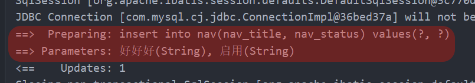
#{...}里面写的名称是对象的属性名，MyBatis 会自动完成映射
7.5 主键返回
在数据添加成功后，获取插入数据库数据的主键。
在多对多的关系下，新增数据还需要维护中间表，需要获取插入数据的主键。
默认情况下，执行插入操作不会返回主键值。如果想要拿到主键值，需要在
Mapper 接口中的方法上添加 @Options 注解，指定属性
useGeneratedKeys=true 和
keyProperty="实体类属性名"
1 | |
测试：
1 | |
7.6 修改
1 | |
7.7 查询
更新数据时，会发送一个请求到服务端，根据 id 查询数据，并将数据回显在页面上。
1 | |
模糊查询的时候，'${}'有 SQL
注入风险，%#{}%不能使用，可以使用 MySQL
提供的字符串拼接函数：concat('%' , '关键字' , '%')
1 | |
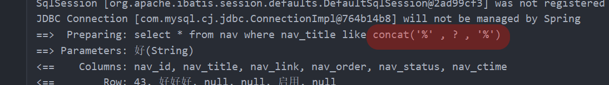
7.8 参数说明
- 在 SpringBoot 1.x版本/单独使用 MyBatis（使用
@Param注解来指定 SQL 语句中的参数名）
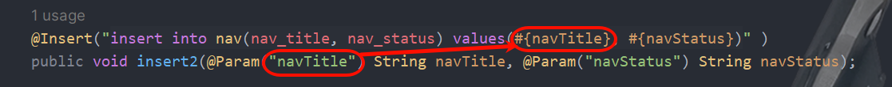
在编译时，生成的字节码文件中，不会保留 Mapper
接口中方法的形参名称，而是使用
var1、var2、…这样的形参名字，此时要获取参数值时，就要通过
@Param 注解来指定 SQL 语句中的参数名。
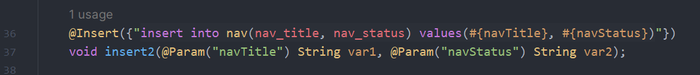
- 在 SpringBoot 2.x版本，保证参数名一致即可

SpringBoot 的父工程对 compiler 编译插件进行了默认的参数 parameters
配置。如果没有父工程，可以在 pom.xml 文件的
<build> 标签中添加或修改如下这个
<plugin 标签：
1 | |
在编译时，在生成的字节码文件中会保留原方法形参的名称，所以#{…}里面可以直接通过形参名获取对应的值。
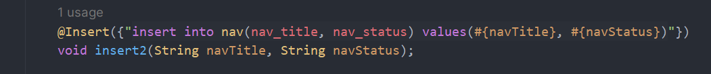
8. MyBatis 的 XML 配置文件
8.1 XML 配置文件规范
使用 MyBatis 的注解，主要是来完成一些简单的增删改查功能。如果需要实现复杂的 SQL 功能，建议使用 XML 来配置映射语句，也就是将 SQL 语句写在 XML 配置文件中。
在 MyBatis 中使用 XML 映射文件方式开发，需要符合一定的规范：
- XML 映射文件的名称与 Mapper 接口名称一致，并且将 XML 映射文件和 Mapper 接口放置在相同包下（同包同名）
- XML 映射文件的 namespace 属性为 Mapper 接口全类名一致
- XML 映射文件中 SQL 语句的 id 与 Mapper 接口中的方法名一致，并保持返回类型一致。
8.2 XML 配置文件实现
1.创建 XML 映射文件 在 resources 下创建
Directory，由于是文件夹路径，想达到包的效果需要使用/，com/baoduo/mapper，和
mapper 接口同包同名
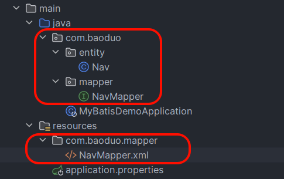
2.编写 XML 映射文件 XML 映射文件中的 dtd 约束，直接从 MyBatis 官网复制即可。
1 | |

可以在 IDEA 中自定义模板：

1 | |
点击 Copy Reference 快速复制全包名：

8.3 MyBatisX
MyBatisX 是一款基于 IDEA 的快速开发 MyBatis 的插件。
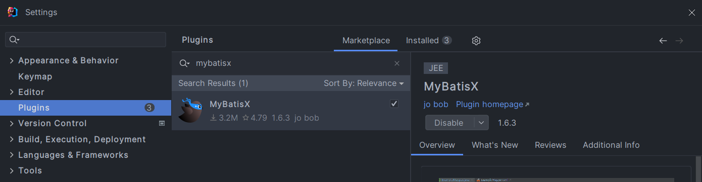
9. MyBatis 动态 SQL
随着用户的输入或外部条件的变化而变化的 SQL 语句，我们称为动态 SQL。在 MyBatis 中提供了很多实现动态 SQL 的标签，下面介绍几个常用的动态 SQL 标签。 ## 9.1 <if><where><set>
<if>：用于判断条件是否成立。使用 test 属性进行条件判断，如果条件为 true，则拼接 SQL。
1 | |
<where>：where 元素只会在子元素有内容的情况下才插入 where 子句，而且会自动去除子句的开头的 AND 或 OR<set>：动态地在行首插入 SET 关键字，并会删掉额外的逗号。（用在 update 语句中）
9.2 <foreach>
批量删除功能中，可以使用<foreach遍历 id。
collection：集合名称item：集合遍历出来的元素/项separator：每一次遍历使用的分隔符open：遍历开始前拼接的片段close：遍历结束后拼接的片段
Mapper 接口：
1 | |
XML 映射文件：
1 | |
9.3 <sql><include>
在 XML 映射文件中配置的
SQL，可能会存在很多重复的片段，此时就会存在很多冗余的代码。
对重复的代码片段进行抽取，将其通过<sql>标签封装到一个
SQL 片段，然后再通过 <include> 标签进行引用。
<sql>：定义可重用的 SQL 片段，定义唯一 id<include>：通过属性 refid，指定包含的 SQL 片段的 id
SQL片段： 抽取重复的代码
1 | |
然后通过<include>
标签在需要的地方进行引用。操作如下：
1 | |